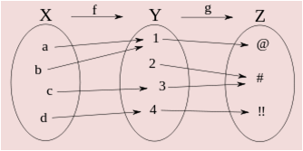
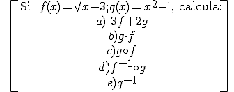
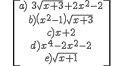

Se define la suma, resta, multiplicación y división de funciones como:
- (f ± g)(x) = f(x) ± g(x)
- (f · g)(x) = f(x) · g(x)
- (f/g) (x) = f(x)/g(x) (si g(x)≠0)
Ejemplo: si f(x) = x2 -2, g(x) = 3x + 2, entonces:
- (f + g)(x) = f(x) + g(x) = x2 + 3x
- (f - g)(x) = f(x) - g(x) = x2 – 3x - 4
- (f · g)(x) = f(x) · g(x) = 3x3 + 2x2 – 6x - 4
- (f/g) (x) = f(x)/g(x) = (x2 -2)/(3x + 2), si x ≠ -2/3
La función composición es la aplicación de una función al resultado de otra. Se representa g°f, y se lee “f compuesto con g”.
g°f(x) = g(f(x)) (si f(x)Є Dom g)

Ejemplo. Si f(x) = x + 1; g(x) = x2, entonces:
g°f(x) = g(f(x)) = g(x + 1) = (x + 1)2 = x2 + 2x +1
f°g(x) = f(g(x)) = f(x2) = x2 + 1
NOTA. Como has visto, la composición no cumple la propiedad conmutativa:
g°f ≠ f°g
La función inversa de f es la función que deshace a la función f, es decir, es la función f-1 que cumple f˚ f-1(x) = f-1 ˚f (x) = i(x) = x
Ejemplo 1: si f(x) = x2, entonces f-1(x) = √x, porque
f° f-1(x) = f(√x) = (√x)2= x
f-1°f (x) = f-1(x2) = √x2 = x
Ejemplo 2: si f(x) = 1/x, entonces f-1(x) = 1/x, porque
f˚°f-1(x) = f(1/x) = 1/(1/x)= x
f-1°f (x) = f-1(1/x) = 1/(1/x)= x
x = √(2y) → x2 = 2y → y = f-1(x) = x2/2
NOTA. Las funciones inversas son simétricas y su eje de simetría es la recta y = x
Ejercicio

\[\begin{align} & \text{Si }f(x)=\sqrt{x+3};g(x)={{x}^{2}}-1,\text{ calcula:} \\ & a)\text{ 3}f+2g \\ & b)g\cdot f \\ & c)g\circ f \\ & d){{f}^{-1}}\circ g \\ & e){{g}^{-1}} \\ \end{align}\]
Soluciones:
